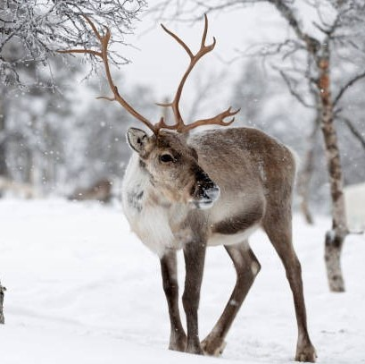
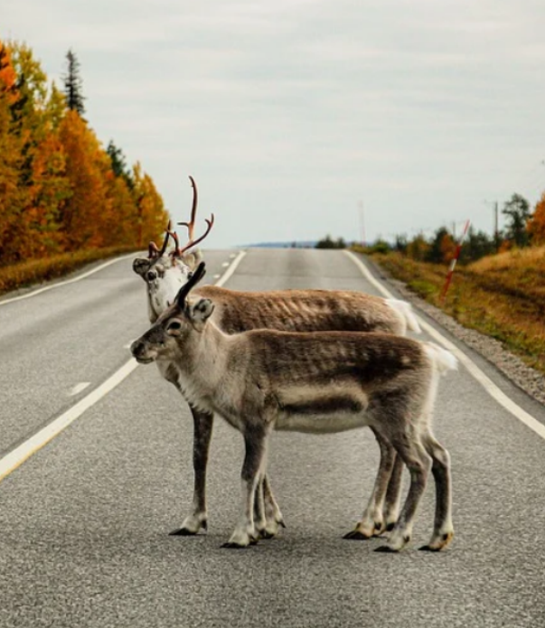

Les samis, éleveurs de rennes
Le renne
Le renne est un animal que l’on trouve dans les régions les plus froides du monde, il s’adapte aux températures difficiles et aux changements saisonniers de la lumière (par exemple, la couleur des yeux du renne passe du marron doré en été au bleu profond en hiver). Le renne a des poils épais et longs qui s’endurcissent en hiver; la couleur de son pelage noir, blanc ou marron fait qu’il se fond parfaitement dans la nature. De plus, ils se déplacent facilement dans la neige grâce à leurs sabots larges (similaires à des raquettes) et se nourrissent en grattant la neige pour trouver des plantes et des svamps (champignons).
L'élevage du renne
Depuis toujours, les samis sont associés aux rennes. A l’origine, les samis étaient un peuple qui vivait de la pêche et de la chasse mais au fil du temps les rennes sont devenus de plus en plus domestiqués. Aujourd’hui l’élevage de ces troupeaux est leur activité principale, le peuple suit la transhumance des rennes et vivent en parfaite harmonie avec eux. En effet, pour les autochtones tout tourne autour du renne puisqu’ils s’habillent avec la peau de l’animal, créent des couteaux grâce aux cornes, et le renne représente 90% de l’alimentation des samis.
Cet animal reflète aussi un indicateur de richesse, c’est à dire que plus le sami a de rennes plus sa richesse est importante car le renne est tout ce que possède le sami. Dans ces régions, cette bête n’a pas le droit d’être chassée même s’il y en a des millions car elles appartiennent à ce peuple. Les regrouper demande d’être plusieurs, c’est une opération compliquée car les troupeaux sont grands donc les samis utilisent des scooters des neiges, et ont recours même parfois à des hélicoptères. Pour les attraper, ils manient des lassos. Les Samis sont les seules personnes autorisées à élever les rennes et une police à été mise en place en cas de problème entre les différents éleveurs et leur troupeau.
Les difficultés du métier
L'élevage des rennes est de plus en plus compliqué et les samis rencontrent de multiples problèmes. En premier lieu, les Samis doivent faire face à la mondialisation, le développement économique menace leur mode de vie et leur territoire. En effet, les forêts sont de plus en plus exploitées pour les industries, les arbres sont coupés et les sols sont endommagés à grande échelle, saccageant par la même occasion le lichen (la nourriture dont raffolent les rennes).
Une autre menace dûe au développement économique est un projet ferroviaire traversant tout le territoire reliant la Finlande avec l’océan à travers la Norvège, dans le but d’augmenter le tourisme et d’extraire certaines ressources naturelles dans cette région reculée. Cependant, cette route coupant en deux le territoire du peuple causerait des difficultées pour l’élevage des rennes car ceux-ci ne pourraient plus se déplacer librement (en plus d’affecter les écosystèmes). Pour finir, le tourisme sur les territoires peut effrayer les bêtes surtout si les voyageurs se déplacent en moto neige. De même que la construction des routes cause des centaines de rennes renversés tous les ans.
Ensuite, il n’y a pas assez de nourriture alors les éleveurs doivent apporter de la nourriture très coûteuse pour compléter leur alimentation. Il y a beaucoup trop de rennes par rapport aux pâturages malgré le fait que la police ait établi des taux de rennes par an, ces taux ne sont pas respectés. Enfin, le changement climatique a un effet désastreux sur les températures hivernales. Les réchauffements et refroidissements continus détruisent les sols et favorisent l’émergence d’épaisses couches de glace qui empêchent les rennes de creuser pour se nourrir, de sorte que les Samis doivent trouver de nouvelles ressources et vont jusqu’à creuser les sols à leur place. Le métier d’éleveurs de rennes est très difficile, les samis ne peuvent plus en vivre aujourd’hui et doivent compenser en travaillant en plus. Souvent, les femmes exercent un métier dans le tourisme ou deviennent parfois professeur.